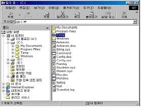
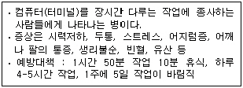
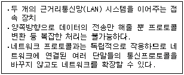
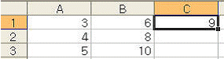
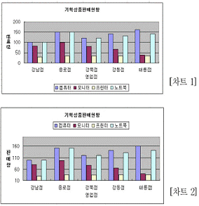
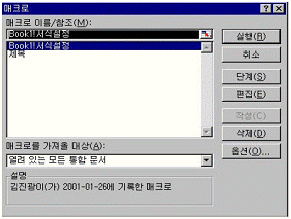
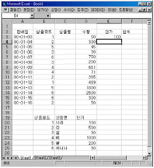

컴퓨터활용능력-2급 (2005-07-24 기출문제)
1과목: 컴퓨터 일반
1. 다음 중 인터넷 서비스에 대한 설명으로 거리가 먼 것은?
- 전자우편 : E-mail이라고 하며 다른 인터넷 사용자들과 편지를 주고 받을 수 있는 서비스이다.
- usenet : 뉴스그룹이라 하고 새로운 뉴스를 주로 취급하며 인터넷 신문 사이트에서 제공하는 뉴스 정보를 의미한다.
- Telnet : 멀리 떨어진 곳에 위치한 호스트 컴퓨터에 접속할 때 사용하는 서비스이다.
- FTP : 파일전송 프로토콜(File Transfer Protocol)의 약자로 인터넷에서 파일을 송수신할 때 사용되는 서비스이다.
(정답률: 72%)

2. 다음의 소프트웨어 중에서 나머지 셋과 그 성격이 다른 것은?
- 어셈블러(assembler)
- 인터프리터(interpreter)
- 운영체제(operating system)
- 컴파일러(compiler)
(정답률: 72%)
3. 한글 윈도우 98에서 아래의 그림과 같이 탐색기에서 Temp 폴더 속에 있는 폴더 수 및 파일수와 전체용량(크기)을 알기 위한 방법으로 옳은 것은?

- 해당 폴더를 선택한 후에 편집메뉴에서 모두선택 항목을 선택한다.
- 해당폴더를 선택한 후에 도구메뉴에서 폴더옵션 항목을 선택한다.
- 해당 폴더를 선택한 후에 마우스의 오른쪽 버튼을 눌러서 나타나는 팝업메뉴에서 등록정보 항목을 선택한다.
- 해당 폴더를 선택하면 탐색기의 상태표시줄에 전체용량이 나타난다.
(정답률: 63%)
4. 다음 중 제4세대 컴퓨터의 주요 소자에 해당하는 것은?
- 트랜지스터
- 산술논리장치(ALU)
- 고밀도 집적회로(LSI)
- 바이오스(BIOS)
(정답률: 72%)
5. 다음 중 컴퓨터의 CPU에서 덧셈, 뺄셈, 곱셈, 나눗셈을 하는 기능을 갖는 장치는?
- 레지스터
- 산술논리장치(ALU)
- 제어장치(CU)
- 바이오스(BIOS)
(정답률: 88%)
6. 다음에서 설명하고 있는 증후군을 무슨 증후군이라 하는가?

- ADT 증후군
- MELISSA 증후군
- UPS 증후군
- VDT 증후군
(정답률: 68%)
7. 윈도우에서 다수의 응용프로그램으로 작업할 때, 단축키를 사용하여 창의 조작 등을 실행할 수 있다. 다음 중 잘못 설명된 것은?
- Ctrl+Esc : 시작버튼을 누른 것과 같다.
- Ctrl+Shift : 현재 실행중인 다른 창으로 이동한다.
- Alt+Enter : 도스 창에서는 전체화면모드의 창모드로 서로 전환된다.
- Alt+Tab : 다른 응용프로그램으로 이동한다.
(정답률: 69%)
8. PC의 외장형 포트와 이에 연결할 수 있는 기기를 짝지어 놓은 것이다. 다음 중 가장 적절치 않은 것은?
- PS/2포트 - 마우스
- IEEE1394 - 디지털캠코더
- LPT포트 - 키보드
- USB포트 - 프린터
(정답률: 59%)
9. 다음은 한글 윈도우 98에서 폴더옵션에 관한 문제이다. 옳지 않은 것은?
- 현재 폴더옵션은 모든 폴더에 적용시킬 수 있다.
- 폴더옵션의 보기 탭은 제목표시줄에 전체 경로표시여부를 설정할 수 있다.
- 현재 등록된 파일형식중 원하는 항목을 수정하거나 삭제할 수 있는 탭은 폴더옵션의 보기 탭이다.
- 폴더옵션의 보기 탭은 숨김파일이나 시스템파일표시여부를 설정할 수 있다.
(정답률: 58%)
10. 다음 중 한글 윈도우 98의 [내 컴퓨터]에서 디스크 드라이브를 선택하여 포맷을 하려고 할 때 포맷의 형식과 옵션에 대한 설명으로 바르지 못한 것은?
- 전체 : 디스크 전체를 포맷하는 형식으로 포맷 후 불량 섹터를 검색하고 부팅 가능한 디스크를 만든다.
- 시스템 파일만 복사 : 사용하던 디스크에 시스템 파일만 복사하여 부팅 가능한 디스크를 만든다.
- 빠른 포맷 : 사용하던 디스크의 불량 섹터는 검색하지 않고, 디스크에서 파일을 모두 삭제한다.
- 포맷을 마친 후 디스크 정보 표시 : 포맷을 마친 후 디스크 공간, 불량 섹터가 차지하는 크기 등의 정보를 표시한다.
(정답률: 36%)
11. 국내 PC 통신망에서 사용하는 모뎀의 파일 전송 프로토콜이 아닌 것은?
- Kermit
- Xmodem
- Zmodem
- Wmodem
(정답률: 43%)
12. 다음 중 한글 윈도우 98에 대한 설명으로 잘못된 것은?
- GUI 기법의 사용자 중심 운영체제이다.
- 내부에 향상된 MS-DOS기능을 포함하고 있다.
- 기존 16비트 체계를 유지한다.
- 플러그 앤 플레이 기능을 지원한다.
(정답률: 59%)
13. 인터넷 주소(IP Address)를 물리적 하드웨어 주소(MAC Address)로 변환하는 프로토콜은?
- DNS
- ARP
- ICMP
- RARP
(정답률: 42%)
14. 멀티미디어 데이터의 전송에 적합한 전달 방식은?
- 비동기 모드(ATM)
- 동기 전송 모드(STM)
- 회선 전송 모드
- 무선 전송 모드
(정답률: 43%)
15. 월드 와이드 웹 보안 기법의 종류가 아닌 것은?(문제오류로 실제 시험장에서는 3,4번을 정답처리한 문제 입니다. 여기서는 3번을 정답 처리 합니다.)
- SSL(Secure Socket Layer)
- S-HTTP(Secure-HTTP)
- PGP(Pretty Good Privacy)
- NCSC(National Computer Security Center)
(정답률: 80%)
16. [제어판]의 [시스템] 메뉴 선택시 설정 가능한 기능이 아닌 것은?
- 모뎀과 사운드카드 드라이버와 인터럽트 제어
- LAN카드 인터럽트와 입출력 범위 설정
- 네트워크 등록정보 변경
- CD-ROM의 연결 끊기나 자동삽입 통지 여부
(정답률: 50%)
17. 다음 중 중앙처리장치의 구성 요소가 아닌 것은?
- 산술연산장치
- 입력장치
- 제어장치
- 논리연산장치
(정답률: 60%)
18. 멀티미디어 데이터의 특징과 거리가 먼 것은?
- 양방향성(interactive)
- 선형성(liner)
- 통합성(integration)
- 대용량성
(정답률: 72%)
19. 다음은 통신망을 구성하는 요소를 설명한 것이다. 알맞은 것은?

- 라우터
- 스위칭허브
- 브리지
- 모뎀
(정답률: 60%)
20. 키보드의 특수 제어키에 대한 설명 중 가장 거리가 먼 것은?
- Esc : 명령을 취소시키거나 종료할 때 사용한다.
- Shift : 한글문자의 쌍자음, 쌍모음을 입력할 수 있으며 영문인 경우 소문자 입력 상태라면 대문자가 입력이 된다.
- Caps Lock : 알파벳 문자를 대문자나 소문자로 변경하여 입력할 수 있는 토글키
- Ctrl/Alt : 다른 키와 조합하지 않고 독립적으로 사용하는 특수키이며 이 키를 누르면 Ctrl/Alt 문자가 표시된다.
(정답률: 83%)
2과목: 스프레드시트 일반
21. 다음 중 부분합에서 사용할 수 있는 함수가 아닌 것은?
- 합계
- 곱
- 개수
- 백분율
(정답률: 65%)
22. 다음 중 작업파일을 보호하기 위해서 암호를 설정하는 방법에 대한 설명으로 옳지 않은 것은?
- 암호에는 문자, 숫자, 기호 등을 사용할 수 있다.
- 암호를 모르더라도 파일은 열수 있도록 하고 수정한 내용을 같은 이름으로 저장할 수 없도록 하려면 쓰기암호만 입력한다.
- 암호 입력시 열기 암호와 쓰기 암호로 구분된다.
- 쓰기 암호는 대소문자를 구별하지 않는다.
(정답률: 66%)
23. 데이터 정렬에 관한 설명으로 잘못 된 것은 어느 것인가?
- 데이터의 정렬 방향은 [데이터]-[정렬]-[옵션]에서 위쪽에서 아래쪽으로만 선택 가능하다.
- 선택한 범위의 첫 행을 머리글행으로 지정할 수 있다.
- 최대 세 번째까지의 정렬 기준을 설정할 수 있다.
- 가나다 순으로 정렬을 하려면 오름차순을 선택해야 한다.
(정답률: 59%)
24. 아래 시트에서 C1셀에 수식 ‘=SUM(A$1:$B1)’을 입력한 후 C3 셀까지 채우기 핸들을 이용하여 값을 채울 경우 C3셀의 결과 값은?

- 15
- 36
- 12
- 21
(정답률: 49%)
25. [차트 1]을 완성한 후 [차트 2]와 같이 변경하려고 한다. 이 때 사용되지 않은 기능은?

- 축 제목서식의 텍스트 맞춤방향을 변경하였다.
- [차트종류]-[사용자 정의종류]를 선택하여 [이중 축 혼합형]을 사용하여 보조 축 값을 등록
- 축 서식을 사용하여 최소값, 최대값을 변경하였다.
- 범례 서식을 사용하여 범례의 위치를 변경하였다.
(정답률: 75%)
26. 단축키를 눌러 한번의 명령 실행으로 여러 가지 명령을 순차적으로 실행하여 작업을 완성할 수 있게 하는 기능을 무엇이라고 하는가?
- 피벗 테이블
- 데이터 통합
- 매크로
- 통합문서 공유
(정답률: 72%)
27. 다음 중 피벗 테이블에 관한 설명으로 잘못된 것은?
- 원본 데이터가 입력된 시트에 피벗 테이블을 작성할 수도 있고 새로운 시트에 작성할 수도 있다.
- 피벗 테이블을 작성한 후 원본 데이터를 변경하면 피벗 테이블에 자동으로 반영되지 않는다.
- 피벗 테이블을 작성한 후에 사용자가 새로운 수식을 추가하여 표시할 수 없다.
- 페이지, 행, 열에 배치된 항목은 피벗 테이블 작성 후에도 마음대로 이동시키거나 새로운 항목을 추가할 수 있다.
(정답률: 55%)
28. Visual Basic 편집기 창에서 실행할 매크로를 선택하기 위해 아래와 같은 그림을 나타내었다. 다음 중 그 내용이 옳지 않은 것은?

- 메뉴 중 [도구]의 [매크로]명령으로 나타난 창이다.
- 매크로 이름을 선택하고 [실행]단추를 클릭하면 엑셀창에서 매크로가 실행된다.
- 매크로 선택하고 [편집]단추를 클릭하면 매크로 기록 내용을 편집할 수 있는 매크로 모듈창이 열린다.
- 매크로 이름을 선택하고 [옵션]단추를 클릭하면 매크로 이름과 바로 가기키를 변경할 수 있다.
(정답률: 62%)
29. 다음 중 사용자 정의 도구 명령을 도구모음 에 추가하는 작업에 대한 설명으로 잘못된 것은?
- [보기]-[도구모음]-[사용자 정의]
- [도구]-[사용자 정의]
- 도구모음 줄에서 오른쪽 마우스를 클릭하여 단축 메뉴에서 [사용자 정의]를 클릭한다.
- [보기]-[사용자 정의]
(정답률: 46%)
30. 다음 그림의 E3 값을 VLOOKUP함수를 이용하여 나타내었다. 채우기 핸들로 모든 단가를 계산할 생각이다. 이때 [E3]에 옳바르게 사용된 함수식은?

- VLOOKUP(B3,$C$20:$D$25,3)
- VLOOKUP(B3,C20:D25,3)
- VLOOKUP(B3,B20:D25,3)
- VLOOKUP(B3,$B$20:$D$25,3)
(정답률: 61%)
31. 다음 중 워크시트의 데이터 입력에 관한 설명으로 옳지 않은 것은?
- 문자열 데이터는 셀의 왼쪽에 정렬된다.
- 수치 데이터는 셀의 오른쪽에 정렬되며 공백과 특수문자를 사용할 수 있다.
- 기본적으로 수식 데이터는 워크시트상의 해당 셀에 수식 결과 값이 표시된다.
- 특수 문자입력은 한글자음(ㄱ, ㄴ, ㄷ등)을 입력한 후 한자 키를 눌러 나타나는 목록상자에서 원하는 문자를 선택한다.
(정답률: 69%)
32. 특정 셀의 값이 다른 파일이나 웹페이지로 연결되게 하는 기능은?
- 워크시트
- 차트
- 통합
- 하이퍼링크
(정답률: 81%)
33. 차트 마법사 3단계에서 수행할 수 없는 것은?
- 차트제목
- 범례표시여부 및 위치
- 데이터 테이블 표시여부
- 계열위치
(정답률: 50%)
34. 다음 중 틀고정에 대한 설명으로 틀린 것은 어느 것인가?
- 문서의 내용이 많은 경우 셀 포인터를 이동하면 문서의 제목 등이 보이지 않을 때 사용한다.
- 틀고정은 행과 열에 대해 동시에 실행할 수 있다.
- 틀고정 취소는 틀고정 선을 마우스로 더블 클릭하면 된다.
- 일단 설정된 틀고정 위치의 변경은 틀 고정 취소 후 다시 설정할 수 밖에 없다.
(정답률: 53%)
35. 다음은 데이터의 정렬(sort)방식에 관한 설명이다. 잘못 설명한 것은?
- 오름차순이든 내림차순이든 빈 셀(space)은 맨 뒤쪽에 정렬된다.
- 오름차순 정렬시에는 한글이 영문보다 순위가 앞선다.
- 내림차순 정렬시 문자형식으로 저장된 1(‘1)은 숫자 2보다 순위가 뒤진다.
- 내림차순 정렬시 대소문자 구분을 지정하면 대문자가 소문자보다 순위가 앞선다.
(정답률: 47%)
36. 세 값의 집합을 비교할 때 사용되는 차트 어느 것인가?
- 거품형
- 분산형
- 표면형
- 영역형
(정답률: 45%)
37. 다음 중 ‘하이퍼링크 삽입’의 대화상자로 링크를 만들 수 없는 것은?
- 전자 메일 주소
- 폼 도구 모음을 사용하여 만든 컨트롤이나 매크로가 연결된 단추나 그래픽
- 새 문서
- 현재 문서
(정답률: 61%)
38. 다음 중 텍스트 파일 가져오기 에 대한 설명으로 잘못된 것은?
- 텍스트 파일을 가져오는 방법은 [파일]-[열기]와, [데이터]-[외부데이터 가져오기]-[텍스트 파일 가져오기]가 있다.
- ①의 2가지 방법은 모두 “텍스트 마법사‘를 통해서 Excel 파일로 전환된다.
- ①에서 [열기] 명령의 실행 방법은 항상 새 통합문서가 열리면서 사용자가 지정하는 셀에서부터 텍스트 파일의 데이터를 가져온다.
- ①에서 [텍스트 파일 가져오기] 명령의 실행 방법은 현재 열려있는 시트의 지정한 위치에 데이터를 가져와서 편집할 수 있다.
(정답률: 56%)
39. 다음 중 함수에 대한 설명이 잘못된 것은?
- MAX() 인수로 입력된 숫자 중 가장 큰 숫자를 구해주는 함수
- COUNT() 인수목록내에 숫자가 들어있는 셀의 개수를 구하는 함수
- PROPER() 텍스트를 모두 대문자로 변환하여 주는 함수
- DSUM() 지정한 조건에 맞는 데이터베이스에서 필드값들의 합을 구하는 함수
(정답률: 73%)
40. 다음 중 1982년 12월 4일에서 오늘까지 경과된 날짜를 구하는 수식으로 옳은 것은?
- =DATE(1982,12,4)-DAY()
- =DAY()-DATE(1982,12,4)
- =YEAR()-DATE(1982,12,4)
- =TODAY()-DATE(1982,12,4)
(정답률: 72%)